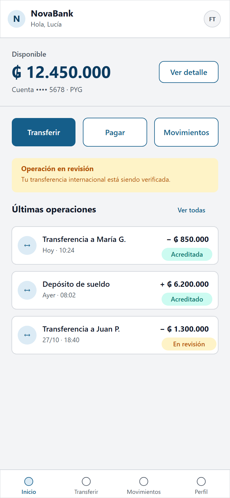
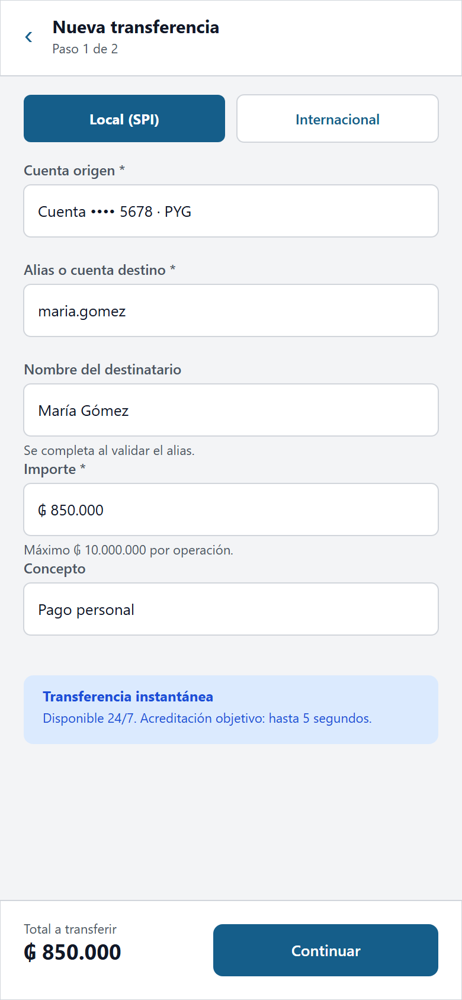
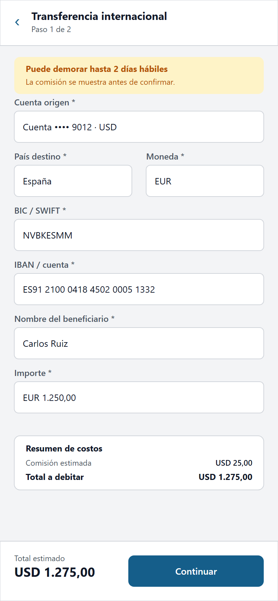
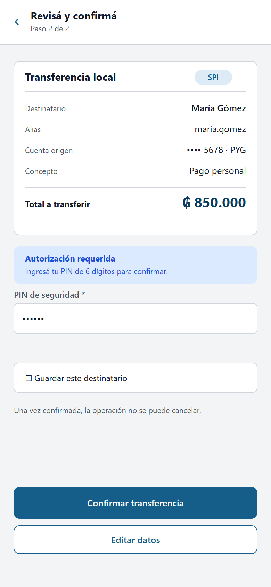
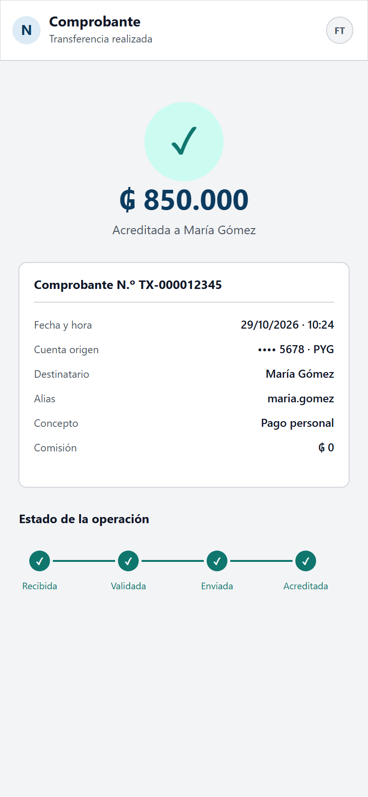
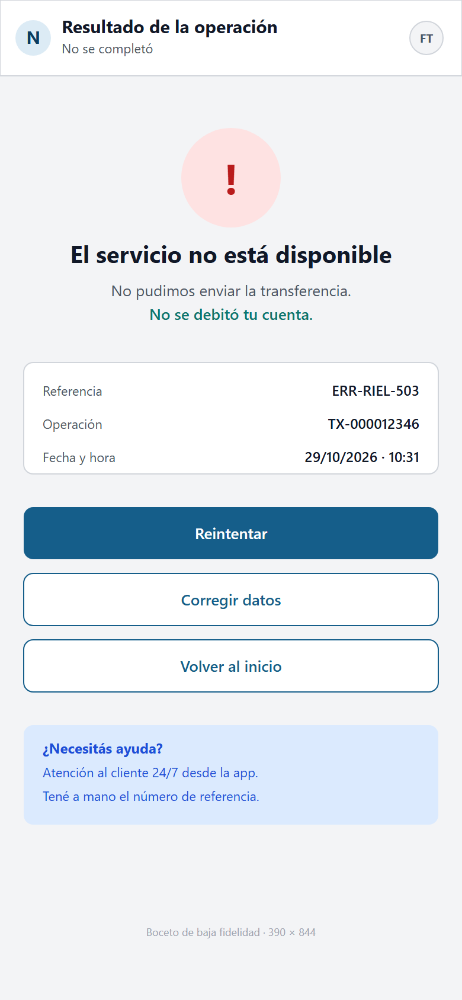
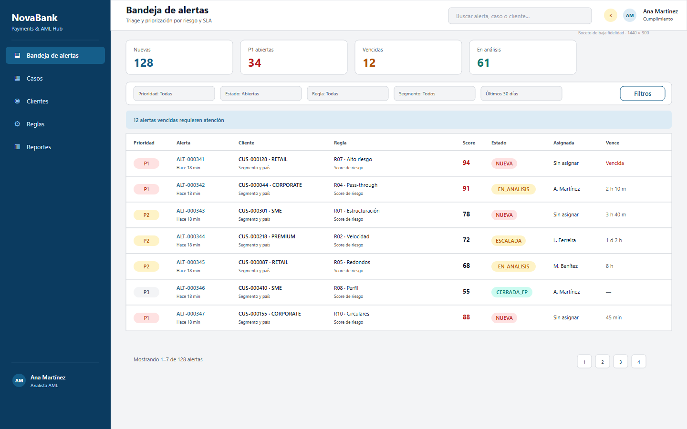
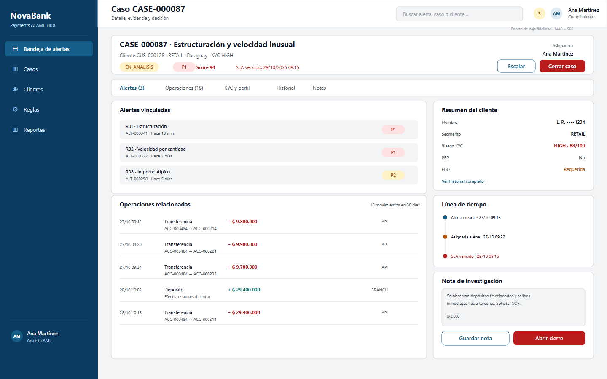
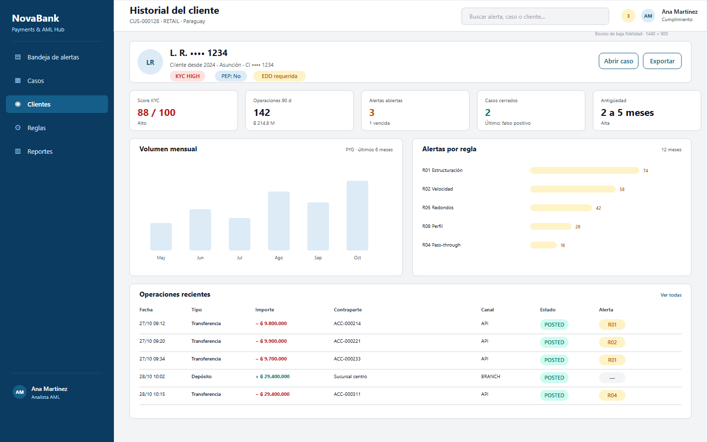
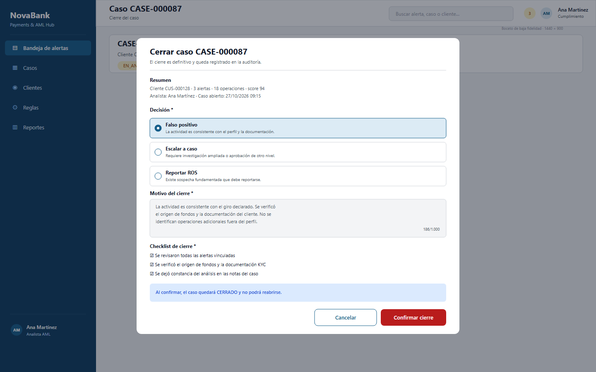

Bocetos de baja fidelidad de la app de transferencias y la consola AML. Son especificaciones visuales del caso ficticio, no capturas de una herramienta operada.

390 × 844 · baja fidelidad






1440 × 900 · baja fidelidad


